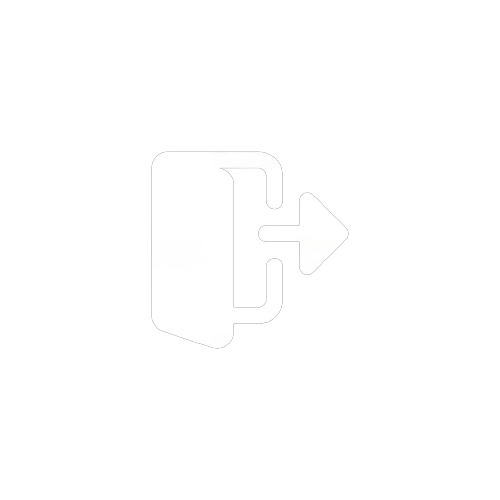

<mat-drawer-container class="example-container h-screen" autosize >
  <mat-drawer [opened]="sideNavOpened" #drawer class="example-sidenav w-56 sm:w-64 md:w-80 " mode="side">
    <div class="bg-theme-black py-6 md:py-10 px-8 md:px-12 h-full flex flex-col justify-between items-center pb-16">

      <div class="w-full">
        <div class="flex items-baseline tracking-widest">
          <p class="text-theme-text-white text-base lg:text-xl font-extrabold -mt-1">movie</p>
          <p class="text-theme-orange text-xl md:text-3xl font-bold">EZ</p>
        </div>


        <!-- NEWS FEED -->
        <div class="py-6 sm:py-12  border-b-2 border-theme-gray">
          <app-bottun-toggle></app-bottun-toggle>
        </div>

        <!-- FOLLOWING -->
        <div class="py-6 sm:py-8 md:py-12">
          <p class="text-theme-text-white/90 mb-2 sm:mb-4 text-sm sm:text-base font-semibold">Following</p>
          <app-followings></app-followings>
        </div>
      </div>

      <!-- logout -->
      <div class="flex gap-3 items-center cursor-pointer hover:bg-theme-light-black p-2 rounded-xl w-fit group">
        
        <p class="font-semibold tracking-wide text-theme-gray group-hover:text-theme-text-white  text-sm sm:text-base">Log Out</p>
      </div>

    </div>
  </mat-drawer>

  <div class="example-sidenav-content bg-theme-black sm:px-4 md:px-8 lg:px-12 flex flex-col h-screen w-full overflow-y-auto">
    <!-- navbar -->
    <app-navbar></app-navbar>

    <!-- body-content -->
    <router-outlet></router-outlet>
  </div>

</mat-drawer-container>
